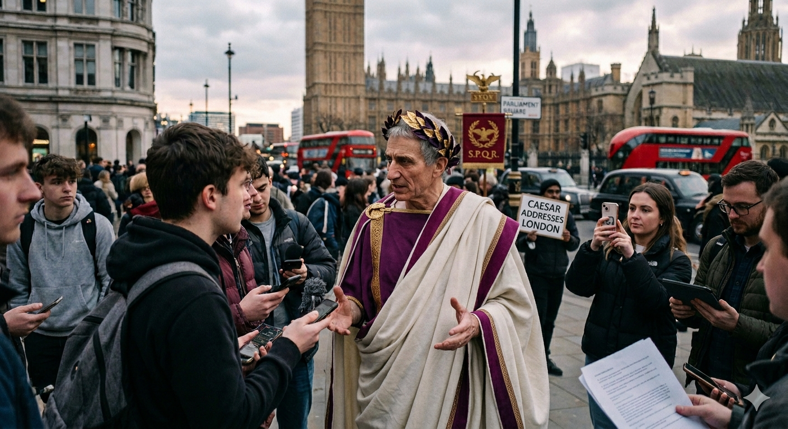
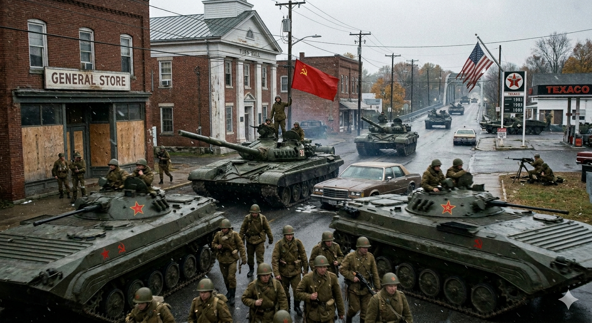
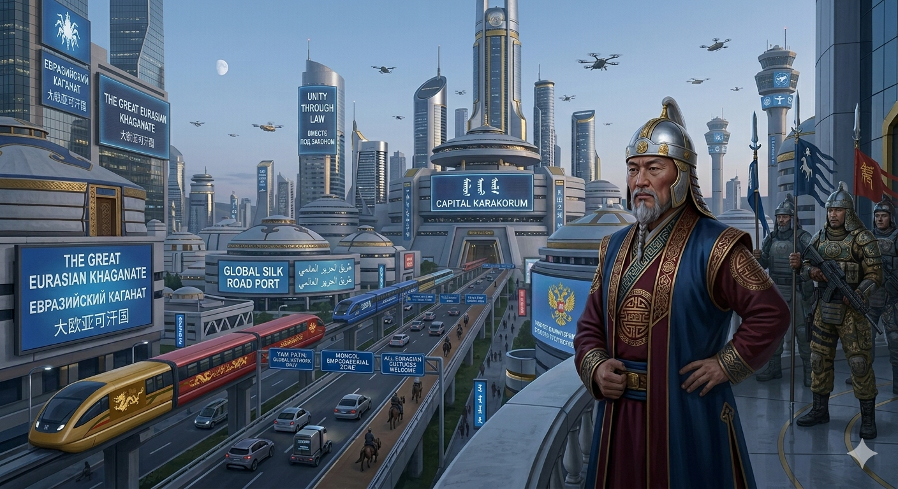

Explore the ripple effects of What If.
The world's first high-fidelity counterfactual engine for historical, scientific, and personal speculation.
Trending Speculations:
Cold War Mars Landing
Silicon Valley in 1890
Scenario 01 / 05

What if
Rome never fell, and Caesar held a press conference in modern London?

What if
The Cold War turned hot, and Soviet forces occupied small-town America?
What if
America became a monarchy, and the President was crowned king?

What if
The Mongol Empire never collapsed, and ruled a unified Eurasia into the present day?
What if
North and South Korea peacefully reunified into a single nation?
Precision Engineering for the Impossible
Unraveling the fabric of history with quantum-scale accuracy.
account_tree
Recursive Reality Engine
Our proprietary LLM architecture doesn't just guess; it simulates secondary and tertiary ripple effects across geopolitical, ecological, and psychological domains.
query_stats
Probability Heatmaps
Visualize the likelihood of any divergence with granular statistical backing.
history_edu
Lore Persistence
Save, branch, and collaborate on entire alternative universes with full historical consistency.
Ready to branch out?
Join 50,000+ historians, writers, and curious minds redefining the limits of "What If".
hub